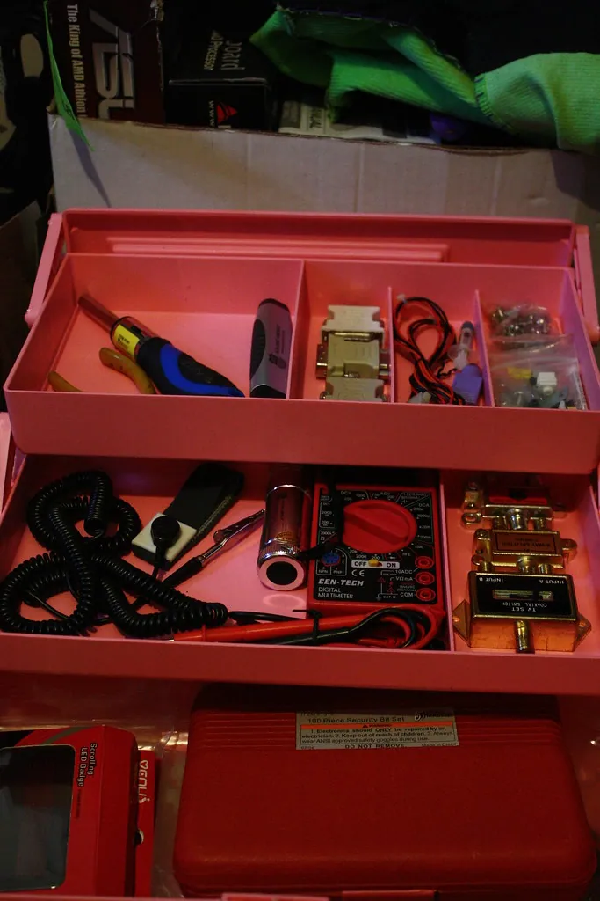

The common fixes that save the most on callouts — patching drywall, clearing a slow drain, replacing a toilet flapper, and weatherstripping a door — each with the steps, the safety, and our honest take on whether to do it yourself.

Safety first: Before any repair: we cover only simple, low-risk tasks. We do not cover electrical work, gas, in-wall or main-line plumbing, roofing, or anything structural — those need a licensed professional every time. Turn off the water supply before plumbing work, wear eye protection when needed, and never stand on a chair when a proper step stool will do.
Patching a hole in drywall
Difficulty: EasyTime: 1 hour plus drying
A knock from a door handle or a removed shelf leaves a hole in the wall, and patching it is one of the most satisfying fixes there is. Small holes and large ones are handled a little differently, but both are well within a beginner's reach.
What you'll need
- A tube of spackle (for small holes) or a drywall patch kit (for larger ones)
- A putty knife
- Fine sandpaper
- Primer and matching paint
- A dust mask and a cloth
- For a small hole, press a little spackle in with the putty knife, smooth it flush with the wall, and let it dry fully.
- For a larger hole, cover it with the self-adhesive mesh patch from a kit, then spread a thin coat of compound over it.
- Once dry, sand the patch smooth and flush with the wall, wiping away the dust.
- Add a second thin coat if needed, feathering the edges outward, and sand again.
- Prime the patch, let it dry, then paint to match the wall.
Tip: Thin coats beat one thick one every time. Two or three light passes, each sanded smooth, give a far better finish than a single heavy glob, which cracks as it dries.
| The situation | Our honest take | Why |
|---|---|---|
| A small ding or nail hole | Do it yourself | A dab of spackle and a touch of paint — the simplest fix there is. |
| A hole up to a few inches across | Do it yourself | A patch kit handles this neatly in an afternoon. |
| A large hole, or damage from water | Call a pro | Big patches need a new piece of drywall cut in; water damage may hide a leak that must be found first. |
| Cracks that keep returning | Call a pro | Recurring cracks can signal a structural issue worth a professional's eye. |
Clearing a slow drain, safely
Difficulty: EasyTime: 30 minutes
A sluggish sink or tub is usually a clog of hair, grease, and soap just inside the drain, and you can often clear it without a single harsh chemical.
Safety first: We do not recommend chemical drain cleaners. They are harsh, can damage pipes, and are dangerous if they splash — especially to the eyes and skin. The gentle methods below are safer and work on most everyday clogs.
- First, try a plunger: fill the basin with a little water, seal the overflow hole with a damp cloth, and plunge firmly a dozen times.
- If that fails, remove and clean the pop-up stopper, which often catches a surprising tangle of hair.
- Pour a kettle of hot (not boiling) water down the drain to melt soap and grease.
- A cup of baking soda followed by a cup of white vinegar, left to fizz for fifteen minutes and flushed with hot water, clears many mild clogs.
- For a stubborn clog, a simple drain snake or a plastic drain-cleaning strip reaches down to pull the blockage out.
| The situation | Our honest take | Why |
|---|---|---|
| A slow single drain | Do it yourself | A plunger, a clean stopper, and hot water clear most of these. |
| A clog you can reach with a snake | Do it yourself | An inexpensive drain snake handles many deeper clogs. |
| Several drains slow at once | Call a pro | This points to a clog deeper in the main line — a plumber's job. |
| Sewage smell or backing up | Call a pro | A possible main-line or sewer problem; call a licensed plumber promptly. |
Replacing a toilet flapper
Difficulty: EasyTime: 20 minutes
A toilet that runs on and on, or that you have to jiggle, usually just needs a new flapper — the rubber seal at the bottom of the tank. It is a cheap part and one of the most satisfying, water-saving fixes in the house.
What you'll need
- A replacement flapper to match your toilet (take the old one to the store, or note the brand)
- Rubber gloves
- A towel
- Turn off the water to the toilet at the valve on the wall behind it, then flush to empty the tank.
- Unhook the old flapper from the little pegs at the base of the overflow tube and unclip its chain from the flush lever.
- Clip the new flapper onto the same pegs and attach its chain to the lever, leaving just a little slack.
- Turn the water back on, let the tank refill, and test the flush.
- Adjust the chain length so the flapper seals fully and the flush works cleanly.
Tip: If the water does not shut off fully at the wall valve, stop and call a plumber rather than forcing it — an old valve can break. A running toilet can waste hundreds of gallons, so this small fix pays for itself quickly.
| The situation | Our honest take | Why |
|---|---|---|
| A running or weak-flushing toilet | Do it yourself | A new flapper is cheap and fits in minutes. |
| The fill valve is also faulty | Do it yourself | Fill-valve kits are beginner-friendly, with clear instructions in the box. |
| A leak at the base, onto the floor | Call a pro | This may mean a failed wax ring or worse — a plumber should look. |
| A cracked tank or bowl | Call a pro | Replace the toilet; this is not a patch job. |
Weatherstripping a door
Difficulty: EasyTime: 45 minutes
A drafty exterior door leaks warmth in winter and cool in summer, and sealing it is cheap, quick, and pays back fast in comfort and lower bills.
What you'll need
- Self-adhesive foam or rubber weatherstripping for the sides and top
- A door sweep for the bottom gap
- A tape measure, scissors, and a screwdriver
- A clean, dry cloth
- On a windy day, feel around the closed door for drafts — the sides, top, and especially the bottom.
- Clean and dry the door frame so the adhesive will grip.
- Measure and cut the weatherstripping to length, then press it firmly into the frame where the door meets it.
- Fit a door sweep along the bottom, trimming it to width and screwing or sticking it in place so it just brushes the threshold.
- Close the door and check your work — the drafts should be gone, and the door should still close easily.
| The situation | Our honest take | Why |
|---|---|---|
| Drafts around a door or window | Do it yourself | Peel-and-stick weatherstripping is one of the easiest, highest-value fixes there is. |
| A door that sticks or won't latch | Do it yourself | Often a loose hinge screw or a strike-plate adjustment — simple with a screwdriver. |
| A rotted frame or threshold | Call a pro | Replacing structural woodwork around a door is a job for a carpenter. |
| New exterior door installation | Call a pro | Hanging and sealing a new door properly is best left to a professional. |
The tools these repairs ask for
Reassuringly, the four repairs above call for only a handful of basic tools, most of which earn their place many times over around a home. A putty knife and some sandpaper for the drywall; a plunger and perhaps an inexpensive drain snake for the drain; rubber gloves and a towel for the toilet; scissors, a tape measure, and a screwdriver for the weatherstripping. Add a small tube of multi-purpose lubricant and you are equipped for far more than these four jobs.
If you are building a kit from scratch, our Tools & Safety guide lists the modest set worth owning and how to use each safely. There is no need to buy everything at once; add a tool as a job calls for it, and before long you will have a kit that handles almost anything a home throws at you. Good tools, kept clean and dry, will outlast you.
The small-repair habit
A home stays comfortable and holds its value through small, regular attention rather than occasional big rescues. The four fixes above are among the most common and most satisfying, and once you have done each once, you will reach for them without a second thought.
Keep a short running list of little jobs as you notice them — the loose handle, the drip, the draft — and tackle two or three on a free afternoon. It is far pleasanter than facing a long list all at once, and it keeps the small things from quietly becoming big ones. And remember the guiding rule of this whole workshop: when a job crosses into electrical, gas, in-wall plumbing, or structural territory, the smart, safe, and often cheaper-in-the-end choice is to call a licensed professional. Next, make sure you are properly equipped and protected over at Tools & Safety.